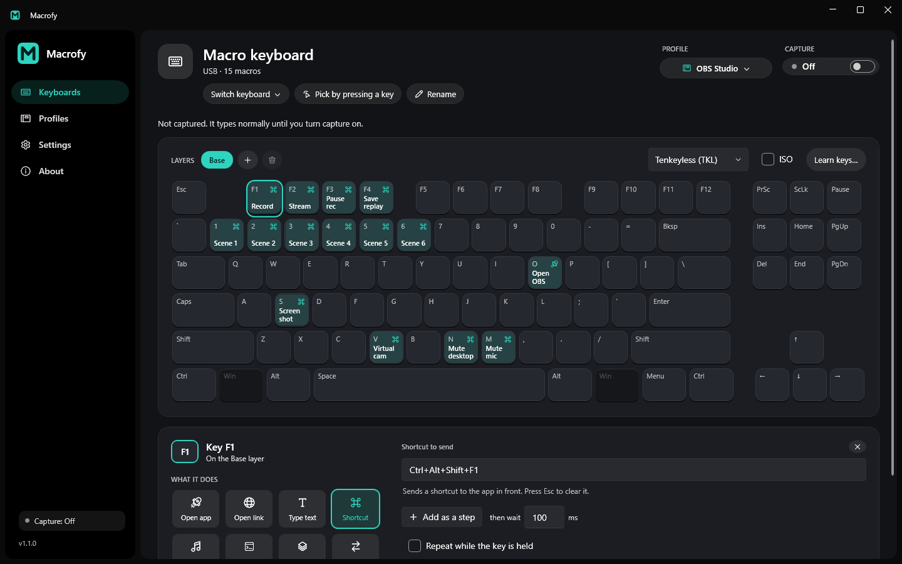

Plug in a spare keyboard
Any USB or Bluetooth keyboard, numpad or macro pad works. Click "Pick by pressing a key" and tap any key on it.
Main keyboard
Spare keyboard
Macrofy takes over one keyboard and turns every key into a launcher, a shortcut or a snippet. The keyboard you type on stays exactly as it is.
Your main keyboard keeps typing normally. Only the one you capture turns into macros.
A hardware macro deck costs about $60 for six keys, or $150 for fifteen. You probably already own a spare keyboard with around a hundred. Macrofy turns it into one, and every macro feature is free.
No driver to install and nothing to script. Pick a keyboard, flip a switch, click a key.
Any USB or Bluetooth keyboard, numpad or macro pad works. Click "Pick by pressing a key" and tap any key on it.
Its keys stop typing and start running your macros. Every other keyboard keeps working like nothing happened.
Click a key and choose what it does, or start from a ready-made template for OBS, Photoshop or VS Code.
Your macros live right on the keyboard, so you can see your whole setup at a glance and change any key in a click.

Or press it on the captured keyboard. The editor opens with whatever the key already does.
Hold or tap a key to flip the whole board to another set of macros, like an Fn key you design.
Starts with Windows, grabs your macro keyboard on its own, and stays out of the way.
Everything you'd want from a macro pad, on hardware you already have.
Macrofy tells your keyboards apart, so it can take over the spare one without touching the one you type on.
Save sets of macros and switch in a click, from the app or the tray.
Open apps, files and links (including app links like whatsapp:// or spotify:), type text, send shortcuts, control media, run commands, switch layers.
Chain actions with pauses in between, for app chords and little routines.
Hold a key for a second set of macros, or tap one to switch.
Volume and zoom keys keep going as long as you hold them. Everything else fires once.
No kernel driver. Nothing about your typing is stored or sent anywhere.
Ready-made profiles for the apps people use most. Using one gives you your own copy to change however you like.
Record, stream, switch scenes, mute your mic and save replays without leaving your game.
One-time setup: press each key in OBS's Hotkeys settings and Macrofy fills them in for you.
Tools, layers, undo, brush size and zoom on dedicated keys. Uses Photoshop's default shortcuts.
Works out of the box.
Command palette, panels, debugging and editing on one hand. Uses VS Code's default shortcuts.
Works out of the box.
| Macrofy | Hardware macro decks | Phone and tablet deck apps | Scripting tools | |
|---|---|---|---|---|
| Price | Free | From about $60 | Free, with paid upgrades | Free |
| Hardware | A keyboard you already have | A new device | Your phone or tablet | Any keyboard |
| Physical keys | Yes | Yes | Touchscreen | Yes |
| Leaves your main keyboard alone | Yes | Yes | Yes | Only with extra setup |
| Setting up a key | Click it, pick an action | Drag and drop | Drag and drop | Write code |
Hardware prices are Elgato Stream Deck list prices, October 2026.
Macrofy skips the kernel driver on purpose. That keeps it lightweight and easy to trust, and it comes with a few trade-offs.
Windows acts on them before any app sees them, so they're dimmed in the app.
Apps that read the keyboard directly (many games, some push-to-talk tools) aren't blocked. Macrofy tells you when it spots this.
To capture inside an app running as administrator, run Macrofy as administrator too. It's one button in Settings.
Windows doesn't let Macrofy's hook into Store apps like Calculator, so keys type normally there.
Layers, sequences, profiles, templates and as many keyboards as you have. No trial, no account.
Everything you need to turn a spare keyboard into a macro pad.
For the things a fixed macro can't do. Describe the task once, and a key does it from then on.
Yes. Every macro feature is free with no trial and no account. A paid Pro tier with an AI assistant is planned; it adds new abilities on top and doesn't take anything away from the free app.
No. To tell your keyboards apart, Macrofy looks at which keyboard each key press comes from, so it can block the captured one and run your macro. It doesn't record what you type, keeps nothing about your typing, and sends nothing anywhere.
The only thing Macrofy does online is check GitHub for a new version, and you can turn that off. The code is open source on GitHub, so anyone can check this.
Windows shows a "Windows protected your PC" box for apps that aren't signed with a paid code-signing certificate yet. It's about the missing signature, not anything in the app. Click More info, then Run anyway. Signed builds are on the roadmap.
Any physical USB or Bluetooth keyboard, numpad or macro pad that Windows sees as a keyboard, including wireless ones with a USB receiver. Virtual keyboards (remote desktop sessions, virtual machines) don't work.
Macros fire in most games. Some games read the keyboard directly, though, so they'll also see the captured key. Games with kernel-level anti-cheat watch for tools that hook into other programs, so use it there at your own risk.
No. Macrofy installs and runs as your user. You only need administrator if you want capture to work inside apps that themselves run as administrator.
Yes. Any profile can be exported as a file and imported on another PC, or sent to a friend.
Macrofy is Windows 10 and 11 only for now. A Mac version is on the list.
Free for Windows 10 and 11. Installs in seconds, no admin needed.